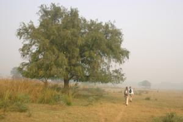

Le 28 novembre 2004,
 Levés avant l’aube (6h30 du matin !), nous enfourchons nos vélos afin d’être au parc avant le lever du soleil. L’atmosphère était très étrange, voire même surréaliste ! Nous nous enfoncions progressivement, sans bruit, dans la brume matinale, loin de tout touriste. Si notre vue ne pouvait guère nous être très utile a ce moment-la, nous ouvriions grand nos oreilles afin d’entendre les bruits de la foret. Le feuillage craquant, les oiseaux piaillant mettaient en éveil tous mes sens... Je sentais la forêt vivre même si je ne pouvais le voir ! Aux alentours de 11h, la brume a enfin décidé de se lever et nous avons pu apprécier la vue de magnifiques oiseaux, faons, antilopes... Un régal pour les yeux ! Nous nous sommes promenés dans le parc jusqu’à ce que la selle du vélo ne s’imprime sur nos fesses et nous sommes rentrés heureux de notre journée mais bien fatigués.Eve-Laure
Alors, vous l’avez vu le tigre ou pas ???
Je crois que c’est une légende pour touriste, mais notre guide nous avait dit que si on avait de la chance on pourrait le voir. Quand on t’annonce ça quand tu rentres dans le parc et donc la brume (qui visiblement a l’air d’être habituelle là-bas) avec ton petit vélo pour seule protection, ça surprend un peu !
En tout cas, continuez : vous m’offrez un sourire tous les matins. C’est vraiment sympa de partager tous ces souvenirs...
Christophe
{kind=link}